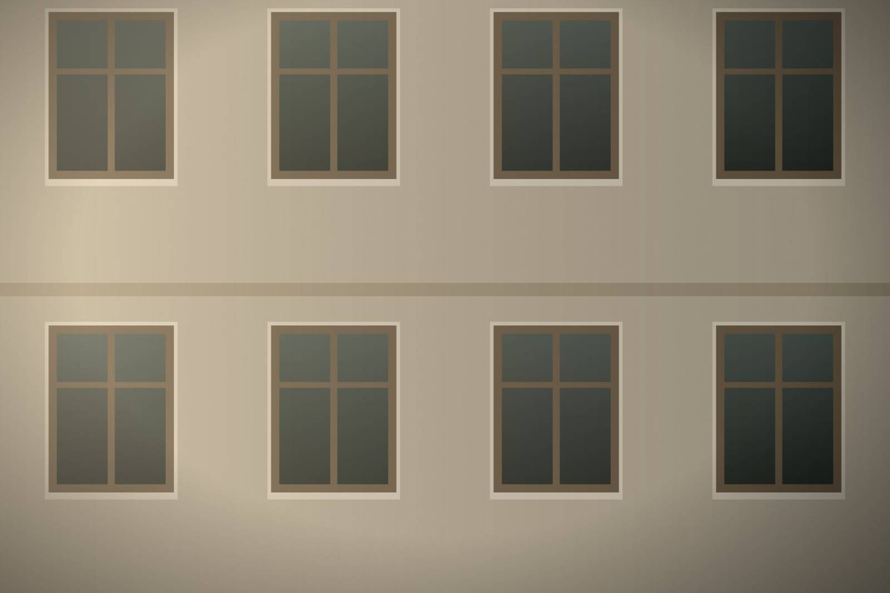
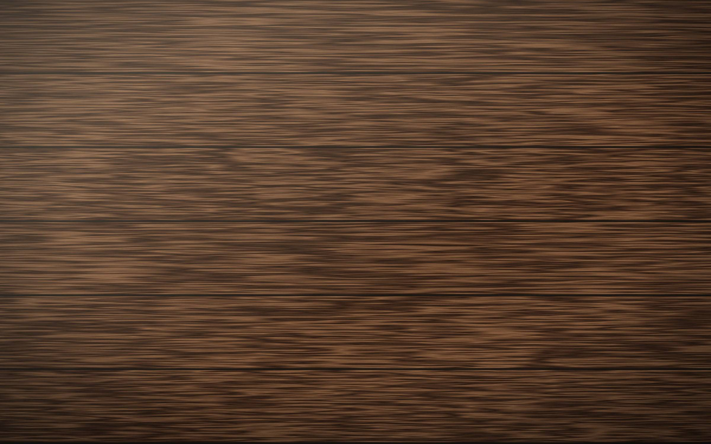
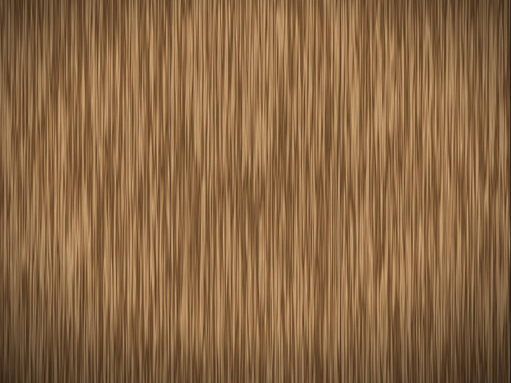
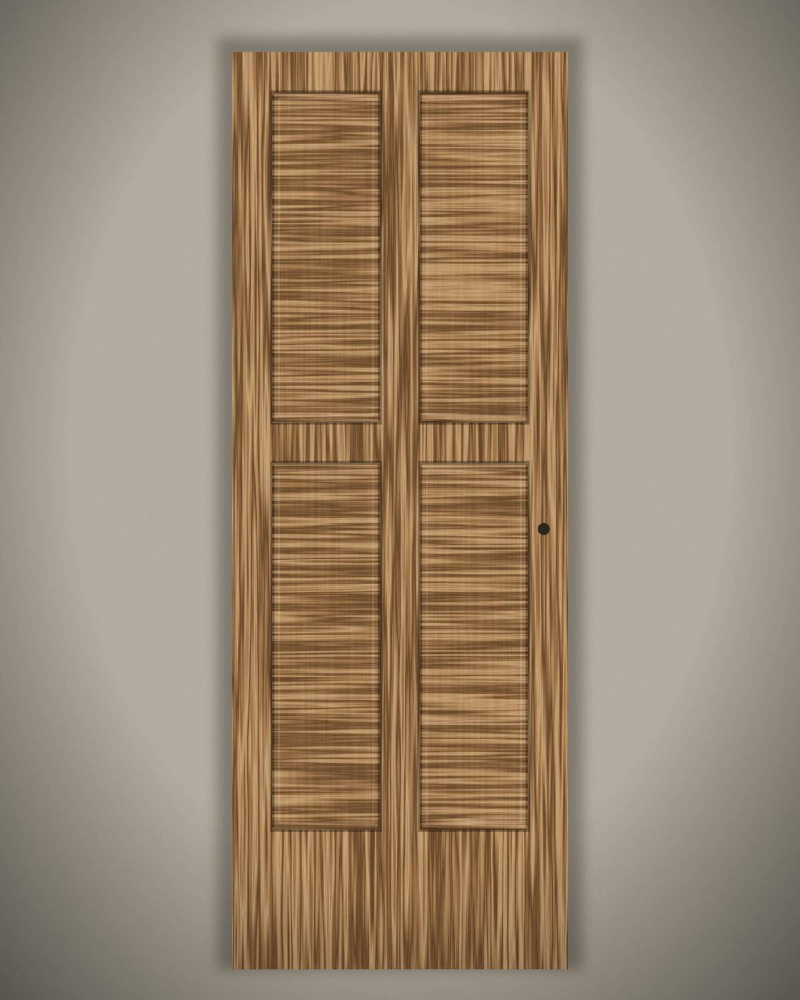
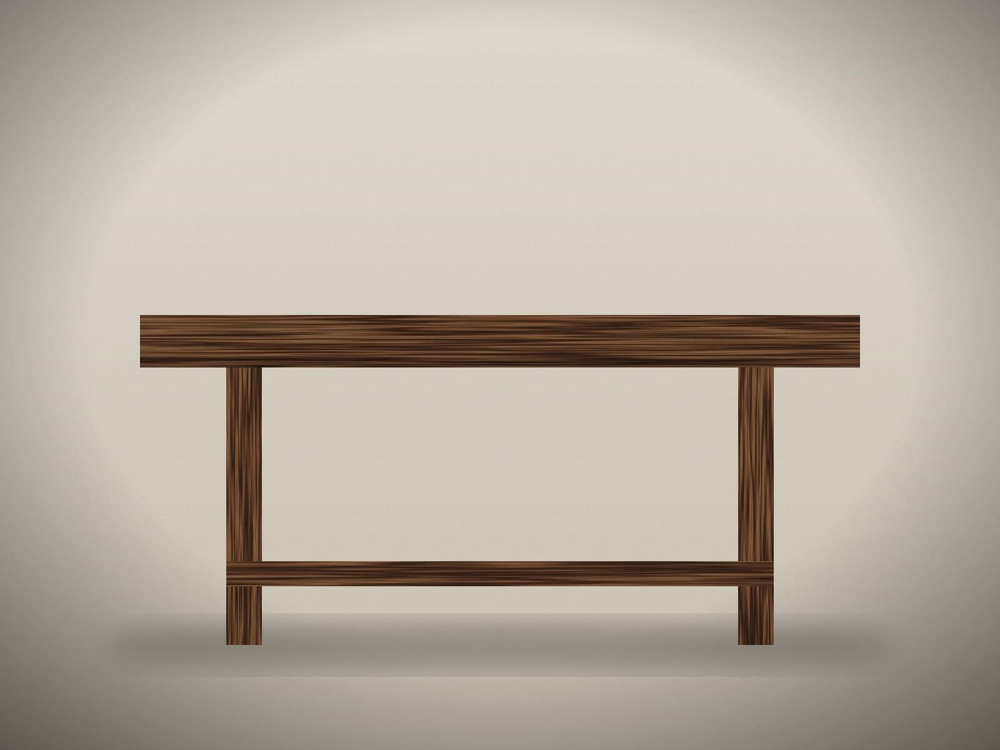
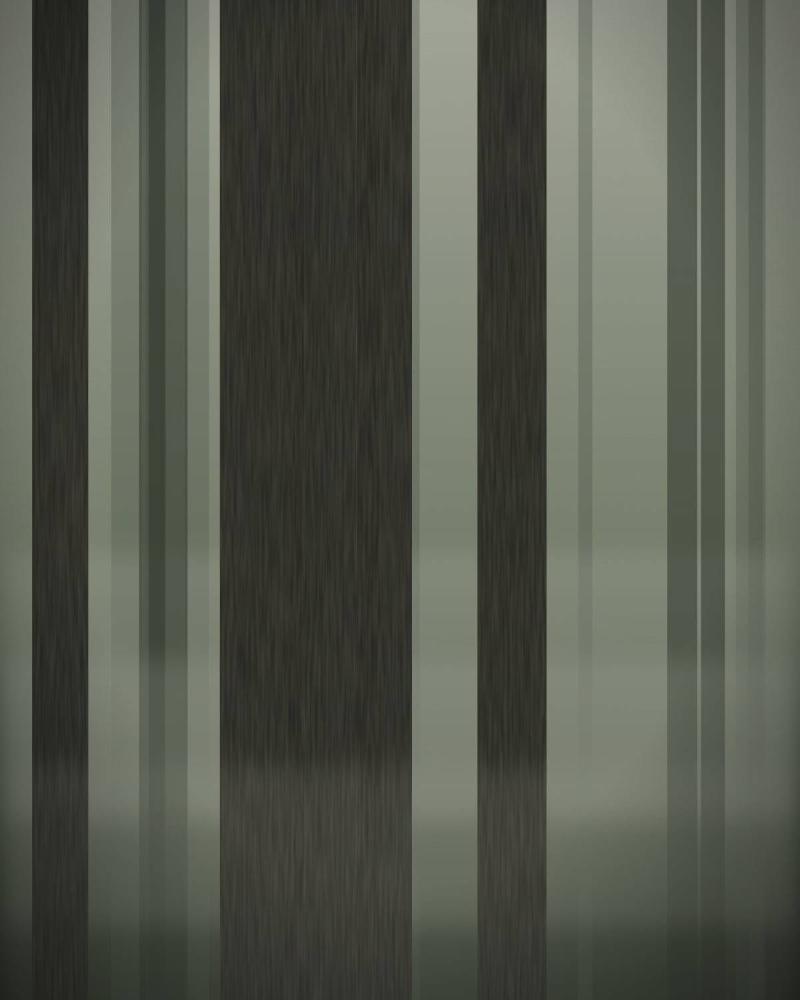
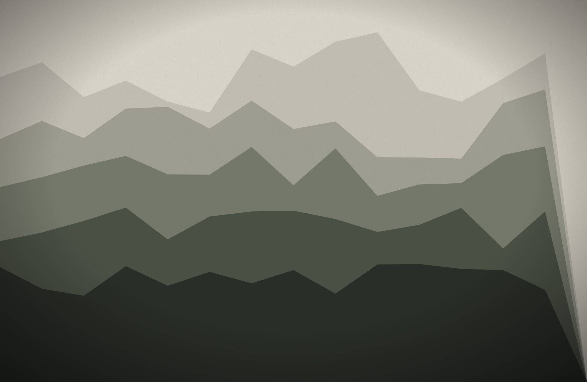
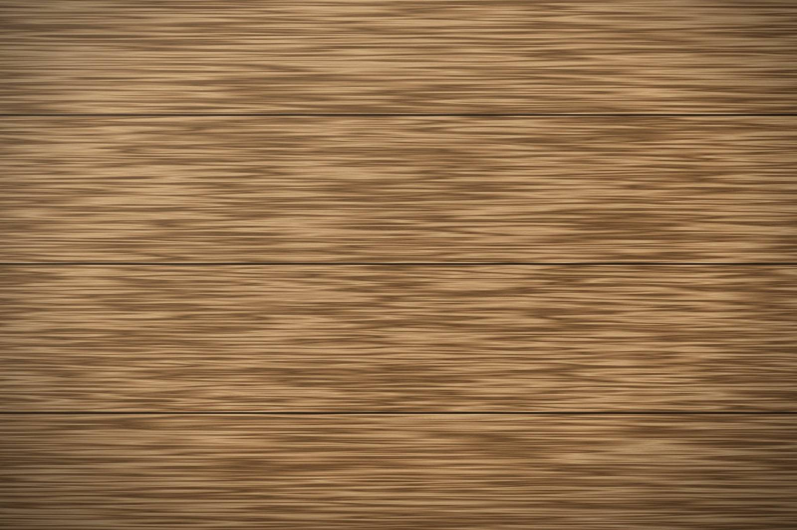
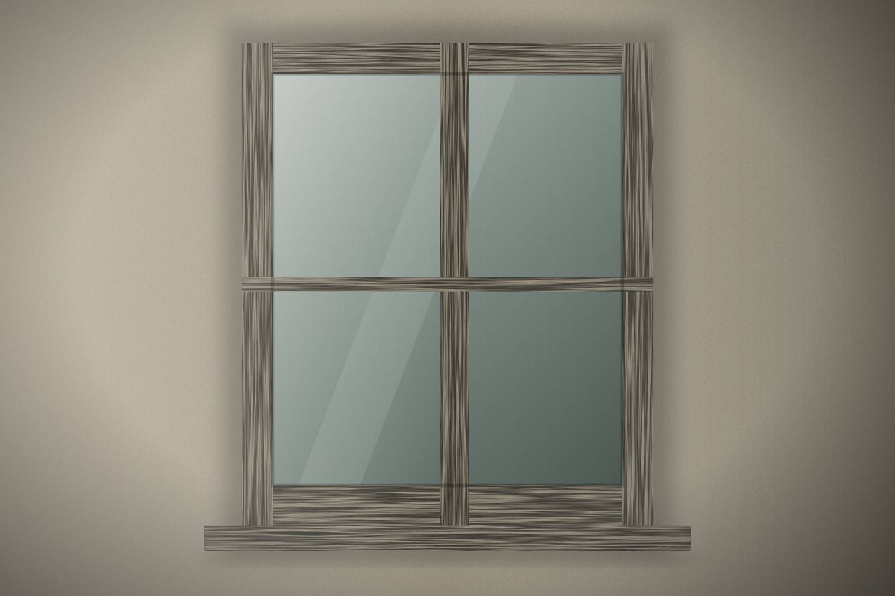
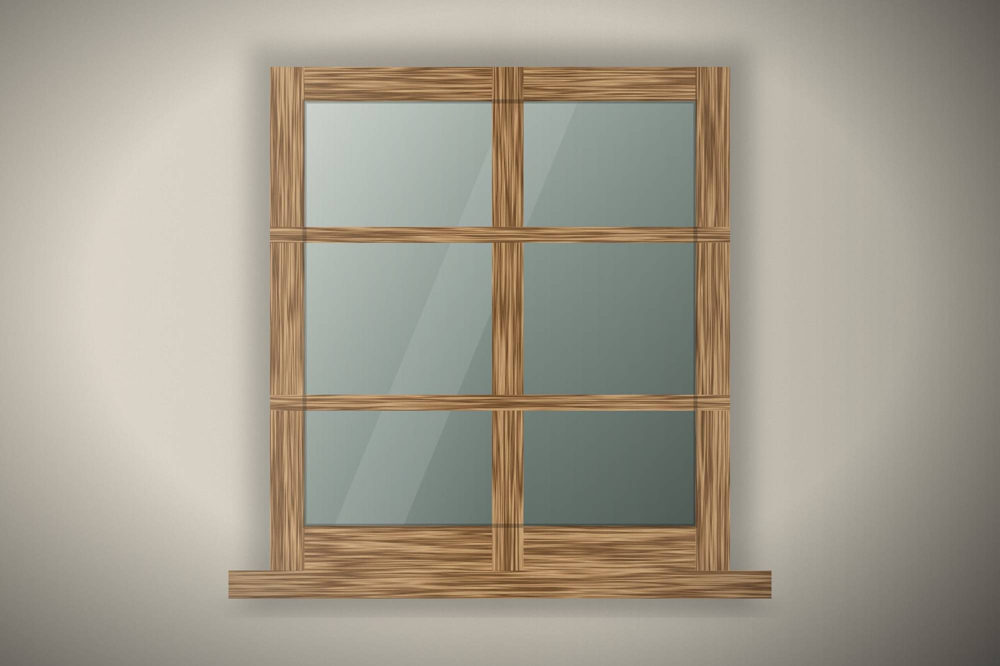

Fenster für eine historische Bibliothek
Aufnahme, Reparatur und Nachbau der Holzfenster einer öffentlichen Bibliothek, damit das Gebäude seinen ursprünglichen Charakter behält.

DRVENO
Handgefertigte Holzarbeiten aus Serbien.
Für Häuser und Projekte in der Schweiz und in ganz Europa.
Serbien · Schweiz · Europa
DRVENO ist eine kleine Familienwerkstatt. Wir fertigen Fenster, Türen, Tische und Einzelstücke für Wohnhäuser und historische Gebäude — eines nach dem anderen, von Hand, aus Holz, das wir gut kennen.
Dahinter stehen fünfundzwanzig Jahre Arbeit mit Holz und traditionellem Handwerk, viele davon in der Schweiz, und die Rückkehr nach Serbien, um die Werkstatt zu bauen, die lange ein Plan gewesen war.


Holzfenster stehen im Mittelpunkt unserer Arbeit. Seit Jahrzehnten entscheiden wir uns für Holz statt Kunststoff — weil sich Holz reparieren lässt, weil es in Würde altert und weil ein Haus Fenster verdient, die zu ihm gehören.
Jedes Fenster wird für eine bestimmte Öffnung gebaut: für ihre Masse, ihre Profile, ihre Architektur.
Das fertigen wir am häufigsten. Es ist ein Ausgangspunkt, keine Grenze.

Nach Mass gebaut, zum Reparieren gemacht.

Vom Original aufgenommen, sorgfältig nachgebaut.

Massive Bretter, als Satz ausgewählt.

Haus- und Innentüren aus Massivholz.

Bänke, Regale, Einbauten — und Ideen, die wir noch nie gebaut haben.
Fast alles, was sich aus Holz bauen lässt, kann mit einem Gespräch beginnen.
Erzählen Sie uns Ihre Idee
Alte Holzfenster sollten nicht einfach ersetzt werden. Wir versuchen zuerst zu verstehen, wie sie gebaut sind — und entscheiden dann mit Ihnen, ob repariert, nachgebaut oder ersetzt wird.
Denkmalpflege & RestaurierungWir möchten die Natur nicht mit Kunststoff überziehen und nachahmen, was es natürlich schon gibt. Wir arbeiten mit ehrlichen, natürlichen Materialien.
Jeder Baum wächst anders. Und so auch alles, was wir daraus bauen. Maserung, Äste und Farbe sind Merkmale, keine Mängel.
Wir drängen kein Stück, nur damit es früher geliefert wird. Es verlässt die Werkstatt, wenn der Handwerker zufrieden ist.
Langsam gefertigt, damit es sehr lange bei Ihnen bleiben kann — und repariert statt ersetzt wird, wenn die Jahre sichtbar werden.

Unsere Familie besitzt einen eigenen Wald in Serbien, und ein Teil des Holzes, mit dem wir arbeiten, kann von dort stammen.
Es geht nicht um ein Etikett. Es geht darum, das Material zu kennen, bevor es auf die Werkbank kommt — wie ein Baum gewachsen ist, wo er stand, wie er getrocknet wurde.
Schicken Sie uns, was Sie haben. Es muss nicht vollständig sein.
Wir besprechen alles — was Sie brauchen, was das Gebäude oder der Raum verlangt, was möglich ist.
Wir halten alles schriftlich fest und stimmen es gemeinsam ab, bevor das erste Brett zugeschnitten wird.
Ihr Stück entsteht von Hand in unserer Werkstatt. In der Regel dauert das rund 1–2 Wochen, nachdem alle Details festgelegt sind. Aufwendige Projekte brauchen mehr Zeit.
Der Transport dauert in der Regel etwa eine weitere Woche, je nach Bestimmungsort und Grösse des Projekts.
Gefertigt in Serbien. Geliefert in die Schweiz und in ganz Europa.

Aufnahme, Reparatur und Nachbau der Holzfenster einer öffentlichen Bibliothek, damit das Gebäude seinen ursprünglichen Charakter behält.

Hohe Schulzimmerfenster, repariert und erneuert, damit ein Schulhaus seinen Rhythmus und sein Licht behält.

Fenster und eine Haustür für ein traditionelles Familienhaus — repariert, wo möglich, neu gebaut, wo nötig.

Unser Gründer hat viele Jahre in der Schweiz gelebt und gearbeitet. Heute kann die Beratung für Kundinnen und Kunden aus der Schweiz auch in der Schweiz beginnen — persönlich, am Telefon oder online.

Massivholz verlangt wenig, aber regelmässig. Ein paar einfache Gewohnheiten halten einen Tisch, eine Tür oder ein Fenster über Jahrzehnte schön.

Abblätternde Farbe und ein Luftzug bedeuten noch nicht, dass ein Fenster am Ende ist. Bevor wir etwas entscheiden, schauen wir genau hin.

Fast sein ganzes Berufsleben lang hat sich unser Gründer bei Fenstern für Holz statt Kunststoff entschieden. Nicht aus Nostalgie — aus Überzeugung.
Sie brauchen noch keinen fertigen Plan.
Eine Idee genügt.
Serbien · Schweiz · Europa